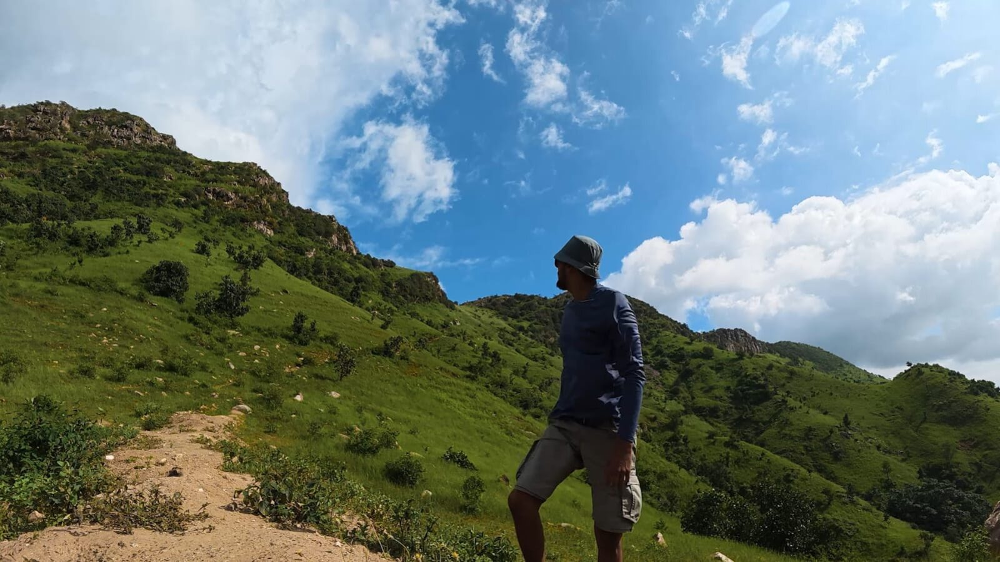
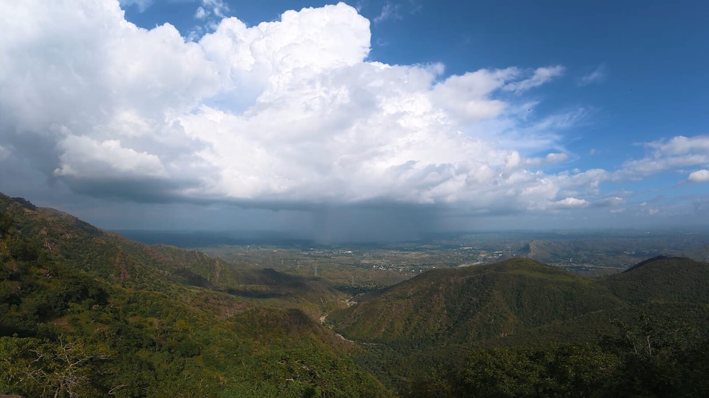
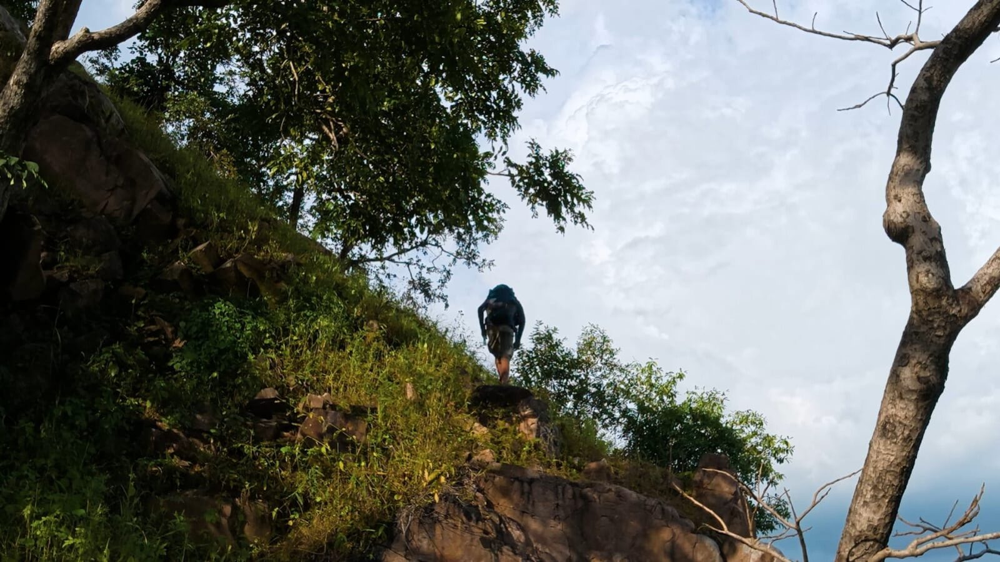
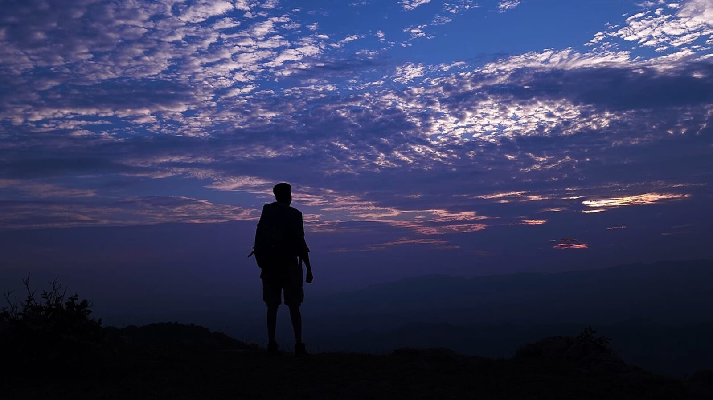
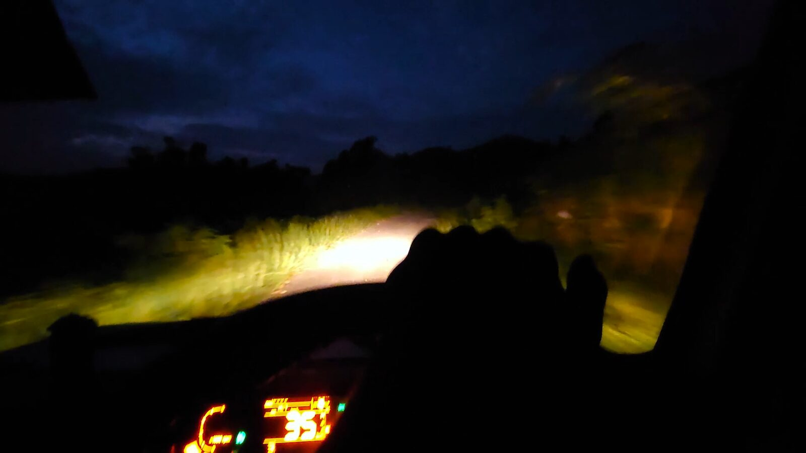

Almost six years ago, while searching for possible trekking and camping itineraries in the southern Aravalis around Kumbhalgarh, we discovered a mountain ridge near Pasun village.
The ridge stretches along the foothills of nearly twenty villages. At that time, I was looking for a route where we could build a proper trekking and camping experience in this landscape.
We eventually named it Shiva Valley Trek. The reason was simple. Whenever I approached different routes around this mountain, I kept finding Shiva temples — sometimes in the villages, sometimes along the trekking routes and sometimes in the middle of the valley. The name gradually became natural to me.
How Shiva Valley Trek started
Around September 2020, I found a local landowner, Kika Ram ji, who had private land on the ridge. His son, Mahaveer ji, was also involved.
I had previously worked in Himachal Pradesh as a trek leader and campsite manager, so I already had an understanding of how a trekking and camping operation could function in a remote mountain landscape. I explained the idea to Kika Ram ji and Mahaveer ji and gradually convinced them to try it. Over the following two months, we worked together to establish the new trek.
But creating a campsite on a mountain ridge was not straightforward. There were two major challenges. The first was training local staff and introducing them to the way a raw mountain campsite operates. The second was logistics.
There were several possible routes to reach the summit campsite, but even the shortest approach required at least three kilometres of trekking. Fortunately, there was already a small store room on the land. That became extremely important. We could store tents, sleeping bags, mattresses, kitchen equipment and other camping supplies there instead of carrying everything up and down the mountain every time.
During those first four months, from September to December 2020, my friend Chirag from Bhilwara, a professional photographer, joined me in establishing the trek. Slowly, the route became operational.
The original route
The route we initially designed for trekkers started from a local Mahadev temple in Pasun village — Jhar Mahadev. Trekkers would reach the village around 1 PM, and we would begin the trek at approximately 1:30. The first section was a steep two-kilometre climb to reach the mountain ridge.
After that came the section that made this route particularly interesting — and difficult. For approximately one and a half kilometres, the trail followed a narrow section of the ridge. In some places, the usable trail was barely half a foot wide, with a slope immediately beside it. During the monsoon, this section could become particularly challenging. When rain arrived, the wet and narrow trail required careful movement.
Once this section was crossed, the character of the route changed again. There was approximately another one and a half kilometres of relatively easy walking along the ridge, followed by a gradual but almost one-kilometre-long ascent toward the summit campsite. The total distance from the foothill to the campsite was approximately six kilometres one way.
I had designed the route with the help of several local people. There were easier ways to reach the campsite, but for the trekking experience we selected this particular route. The following day, trekkers would descend through another route that had its own character.
For a while, it worked. We conducted multiple commercial batches and operated the route for more than a year. But experience teaches you things that planning cannot. After at least ten commercial batches, we realised that this particular route was not suitable for everyone. The distance was long, and some sections were simply too demanding for a commercial trekking group with different levels of experience.
By the end of 2022, after roughly one and a half years of operation, I decided to close this route for regular trekkers. We shifted to another route that was safer while still maintaining the adventure of the experience. That is the route we continue to use today. The old route, however, remained in my memory.
Four years later
In September 2026, an old trekker called me. He and his friends wanted to attempt the original route over the coming weekend. Before agreeing to take them there, I needed to know one thing:
“What condition was the old trail in now?”
Four years had passed since we stopped using it regularly. By this time, I had also started documenting my work, village stories and adventures on video. So I decided to document this journey as well.
On Tuesday, 15 September 2026, I took one of our local staff members with me and started the journey at around 1 PM. This wasn't a regular trek. It was a route reconnaissance. The objective was simple: reach the old route, inspect the difficult sections, understand its current condition and collect enough information to decide whether it could still be attempted.
Preparing for the search

This season had received very little rain in the region. So we decided not to depend on local water sources. We carried additional water, packed some food and prepared the camera equipment carefully. With all the equipment, food and water, my rucksack weighed approximately seven to eight kilograms.
Then we started walking. I filmed parts of the approach, reached the first rest point and continued towards the ridge. Until the ridge, something felt strangely familiar. The trail had changed surprisingly little. Shepherds still regularly used parts of this side of the mountain, and their movement had kept the trail visible.
But once we reached the ridge, the landscape opened up. Behind us was a beautiful view of the surrounding mountains. In the distance, I could see rain falling over another part of the landscape.

We were sitting in sunlight while, only a few kilometres away, rain was falling over the mountains. It was one of those moments that makes you stop walking for a while. After a short rest, we continued.
The route had changed
Now came the section I had actually come to inspect. The difficult ridge section.

As expected, the old trail had deteriorated. There were multiple broken patches. Some sections were still passable, but others had become significantly more difficult and exposed.
The reason was also visible. The shepherds were no longer using this particular section regularly, so the trail was gradually disappearing.
At several points, continuing simply for the sake of filming would have been unnecessary. We were there to inspect the route — not to prove that we could cross every metre of it. So I filmed the sections that could be safely documented and moved forward carefully. Our own safety was more important than getting another shot.
Eventually, we crossed the difficult section and reached a safer part of the ridge. By then, the afternoon was disappearing quickly. It was almost 6 PM. We eventually reached the summit campsite.
The same mountain, four years later
I met our local staff there. And then, almost unexpectedly, the mountain gave me something I had not planned for. Sunset.

Clouds were moving across the landscape. The evening light was changing everything around us. I have been to this place countless times. But standing there that evening, it somehow felt as if I was seeing it for the first time. Maybe that is what happens when you return to a place after several years.
“The mountain has not necessarily changed completely. But you have.”
I took my time and captured the landscape in the evening light. For a few minutes, the route inspection became something else. It became a moment to simply sit and watch.
Time to go back
By around 7:15 PM, it was already dark.

We had completed what we came for. I had collected the information I needed about the old route, documented its present condition and completed the filming. Now we needed to get down.
For the descent, I chose the shorter route. We reached the road around 7:45 PM, where a local staff member was waiting with the car. We were exhausted. But the day had gone exactly as planned.
Two jobs. One old route. One new film. And one question answered.
Why I went back
This journey was not about bringing an old trekking route back simply because it once existed. It was about understanding what has happened to it.
“A trekking route is not just a line on a map.”
It changes with rain, vegetation, animals, shepherds, erosion and the people who continue to use it. The old Shiva Valley route was once part of our regular trekking operation. We walked it with trekkers, improved it, learned from it and eventually moved away from it.
Four years later, I returned as a route researcher rather than a trek leader taking a commercial group. The trail is still there in places. Some parts are almost unchanged. Some have disappeared. And some sections have become considerably more difficult.
For me, that is what this journey was really about: going back to a route that helped build our work in the Aravalis, and seeing what remains of it today.
After reaching my village base, the day finally came to an end. I cooked some delicious dal baati, ate a lot, and went to sleep. Just like after almost every long day in the mountains.
Expedition details
| Experience | The Search for an Old Trek Route — route reconnaissance |
| Route | Original Shiva Valley Trek (retired 2022) |
| Start point | Jhar Mahadev temple, Pasun village |
| Location | Pasun & the Shiva Valley ridgeline, Kumbhalgarh region |
| District | Rajsamand, Rajasthan |
| Landscape | Southern Aravallis / Mewar |
| Distance | Approx. 6 km one way (foothill to summit campsite) |
| Terrain | 2 km steep climb · ~1.5 km narrow ridge (trail ~½ ft wide in places) · ridge walk · ~1 km final ascent |
| Established | Sept–Dec 2020; operated ~1.5 years |
| Recon date | Tuesday, 15 September 2026 |
Watch the film
Walk the Shiva Valley with us
We still run the safer, no-less-beautiful Shiva Valley route — an overnight trek and ridge-top camp in the Kumbhalgarh Aravalis, led by people who mapped it.
Plan your trip